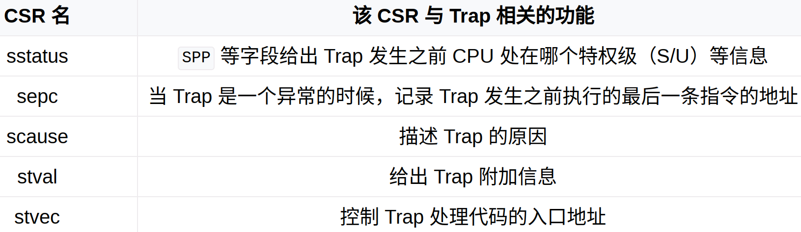
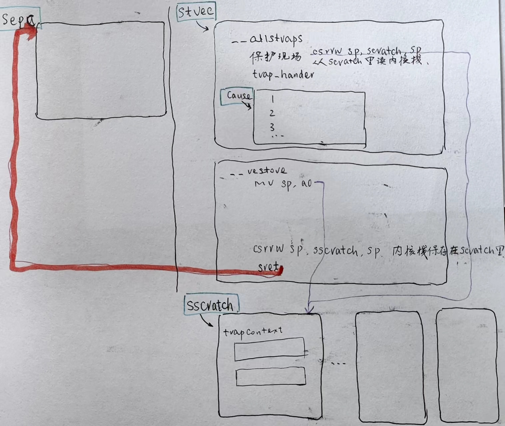
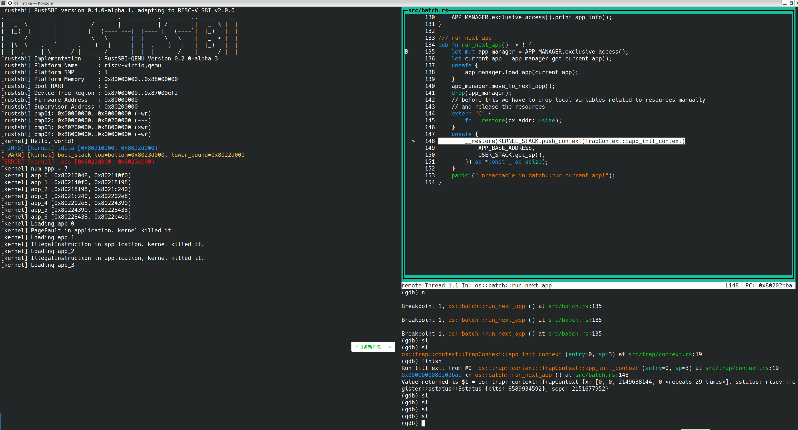

二、批处理系统
批处理系统：
- trap 上下文的切换；
- 特权级切换；
- trap 上下文的保存和恢复；
- 异常处理；
- 系统调用；
- 其它异常；
分时多任务：
- 任务上下文的切换；
- 任务切换的时机；
- 任务上下文与 trap 上下文的区别；
- 中断处理；
sscratch 像是在说，用户的内核栈在这里，现场要保存到这里。
1. 作为批处理系统，从用户程序出发，先准备多个应用，加载一个，运行它，再加载下一个，运行它
- 从应用的编译开始 user/build.py
os.system( "cargo rustc --bin %s %s -- -Clink-args=-Ttext=%x" % (app, mode_arg, base_address + step * app_id) )
$$ base_address + step app_id = 0x80400000 + 0x20000 app_id $$
本章，每一个应用都加载到 0x80400000 处，加载一个，运行它，再加载下一个，运行它，如此循环。
2. user/src/lib.rs
这里才是 user 的主入口。
#[no_mangle]
#[link_section = ".text.entry"]
pub extern "C" fn _start(argc: usize, argv: usize) -> ! {
clear_bss();
unsafe {
HEAP.lock()
.init(HEAP_SPACE.as_ptr() as usize, USER_HEAP_SIZE);
}
let mut v: Vec<&'static str> = Vec::new();
for i in 0..argc {
let str_start = unsafe { ((argv + i * core::mem::size_of::<usize>()) as *const usize).read_volatile() };
let len = (0usize..)
.find(|i| unsafe { ((str_start + *i) as *const u8).read_volatile() == 0 })
.unwrap();
v.push(
core::str::from_utf8(unsafe {
core::slice::from_raw_parts(str_start as *const u8, len)
})
.unwrap(),
);
}
exit(main(argc, v.as_slice()));
}
#[linkage = "weak"]
#[no_mangle]
fn main(_argc: usize, _argv: &[&str]) -> i32 {
panic!("Cannot find main!");
}
调用完用户程序
app后，为什么需要exit这个系统调用呢？
下面的代码，linkage = "weak"，下面也是一个 main，
当编译 app 时，如果 app main 不存在的话，就采用弱链接的实现，
这是为什么有两个 main 实现。
这里才是 user 的主入口程序。
exit(main(argc, v.as_slice()));
这一段代码，先调用 app；
app 结束之后，调用 exit 向 OS 发出请求；
下面的代码，linkage = "weak"，下面也是一个 main，
当编译 app 时，如果 app main 不存在的话，就采用弱链接的实现，
这是为什么有两个 main 实现。
3. 再回到 os 目录，build.rs 生成 link_app.S 文件
link_app.S 扫描 user 目录下的 用户程序 app。
然后 main.rs 中 引入 global_asm!(include_str!("link_app.S")); 后，汇编的符号信息就可以使用了。
4. 读 main 代码
trap::init();
batch::init();
batch::run_next_app();
batch::init() 读 link_app.S 里的信息构建 appManager
batch::init() 找到 link_app.S，把值赋给 struct AppManager 这个结构体。
获取当前的 app，然后通过 load_app 把 app 加载到内存里。load_app 具体干了什么事呢？
unsafe fn load_app(&self, app_id: usize) {
if app_id >= self.num_app {
println!("All applications completed!");
use crate::board::QEMUExit;
crate::board::QEMU_EXIT_HANDLE.exit_success();
}
println!("[kernel] Loading app_{}", app_id);
// clear app area
core::slice::from_raw_parts_mut(APP_BASE_ADDRESS as *mut u8, APP_SIZE_LIMIT).fill(0);
let app_src = core::slice::from_raw_parts(
self.app_start[app_id] as *const u8,
self.app_start[app_id + 1] - self.app_start[app_id],
);
let app_dst = core::slice::from_raw_parts_mut(APP_BASE_ADDRESS as *mut u8, app_src.len());
app_dst.copy_from_slice(app_src);
asm!("fence.i");
}
先用 from_raw_parts_mut 把 0x80400000 + 0x20000 区域清 0，
用 from_raw_parts 填充起始字段，
用 copy_from_slice 把 app 的二进制文件 copy 到这块区域。
fence.i 的意思是，避免执行前一个 app 的指令。即清理cpu 的缓存中前一个 app 的指令。
pub fn run_next_app() -> ! {
let mut app_manager = APP_MANAGER.exclusive_access();
let current_app = app_manager.get_current_app();
unsafe {
app_manager.load_app(current_app);
}
app_manager.move_to_next_app();
drop(app_manager);
// before this we have to drop local variables related to resources manually
// and release the resources
extern "C" {
fn __restore(cx_addr: usize);
}
unsafe {
__restore(KERNEL_STACK.push_context(TrapContext::app_init_context(
APP_BASE_ADDRESS,
USER_STACK.get_sp(),
)) as *const _ as usize);
}
panic!("Unreachable in batch::run_current_app!");
}
先是构建一个 TrapContext 放入 KERNEL_STACK 内核栈里。然后把 TrapContext 地址作为 restore 的参数，restore 完成从内核态跳转到用户态去执行。
5. 再往下一层，对 TrapContext进一步解释
U/S 之间的跳转，依赖对 TrapContext 的保持和恢复。


从 A 到 B，从用户态到内核态。上表中，sstatus/sepc/scause/stval 是 A 侧的信息，stvec 是 B 侧的信息。
sepc 是 A 侧的地址，stval 是 B 侧的地址。
pub struct TrapContext {
pub x: [usize; 32],
pub sstatus: Sstatus,
pub sepc: usize,
}
我对 TrapContext 有点没有理解，为什么上图中 5 个寄存器，TrapContext 只保留了 2 个？
老师说，发生嵌套时，可能覆盖现场。
贺兰星辰说，那 3 个不需要保存，因为那是由处理器给你分派过去的。我们保存上面 2 个是因为后面要恢复。
把 TrapContext 保持在哪里？
sstatus / sepc 是高特权级的寄存器，放在用户栈不合适。保存在 `app 自己的` 内核栈。
6. main() -> trap::init()
pub fn init() {
extern "C" {
fn __alltraps();
}
unsafe {
stvec::write(__alltraps as usize, TrapMode::Direct);
}
}
stvec::write 写入异常处理 __alltraps 的地址，
当用户程序 app 发出 syscall 时，跳转到 __alltraps，
csrrw sp, sscratch, sp 交换用户栈和内核栈指针。交换后，现在的 sp 就指向了 app 内核栈。
将现场，即将寄存器和 2 个寄存器保存在内核栈上，
然后调用 trap_handler 去执行。
下面是异常处理的代码：
__alltraps:
// 看 __restore 倒数第二行，就知道 内核栈指针保存在 sscratch 里。
csrrw sp, sscratch, sp
# now sp->kernel stack, sscratch->user stack
# allocate a TrapContext on kernel stack
addi sp, sp, -34*8
# save general-purpose registers
sd x1, 1*8(sp)
# skip sp(x2), we will save it later
sd x3, 3*8(sp)
# skip tp(x4), application does not use it
# save x5~x31
.set n, 5
.rept 27
SAVE_GP %n
.set n, n+1
.endr
# we can use t0/t1/t2 freely, because they were saved on kernel stack
csrr t0, sstatus
csrr t1, sepc
sd t0, 32*8(sp)
sd t1, 33*8(sp)
# read user stack from sscratch and save it on the kernel stack
csrr t2, sscratch
sd t2, 2*8(sp)
# set input argument of trap_handler(cx: &mut TrapContext)
mv a0, sp
call trap_handler
trap_handler 是 OS 提供服务的地方。
/// handle an interrupt, exception, or system call from user space
pub fn trap_handler(cx: &mut TrapContext) -> &mut TrapContext {
let scause = scause::read(); // get trap cause
let stval = stval::read(); // get extra value
match scause.cause() {
// syscall
Trap::Exception(Exception::UserEnvCall) => {
cx.sepc += 4;
cx.x[10] = syscall(cx.x[17], [cx.x[10], cx.x[11], cx.x[12]]) as usize;
}
Trap::Exception(Exception::StoreFault) | Trap::Exception(Exception::StorePageFault) => {
println!("[kernel] PageFault in application, kernel killed it.");
run_next_app();
}
Trap::Exception(Exception::IllegalInstruction) => {
println!("[kernel] IllegalInstruction in application, kernel killed it.");
run_next_app();
}
_ => {
panic!(
"Unsupported trap {:?}, stval = {:#x}!",
scause.cause(),
stval
);
}
}
cx
}
注意：
- 从 scause 获取 syscall id。
- syscall 后返回 cx.sepc += 4;
trap_handler结束之后，回到 restore，这从哪里可以看得出来？`restore做的事情与__alltraps` 相反。
注意，上面第一个 Trap syscall 之后没有调用 run_next_app()，原因是 system_call 是在执行内核代码，并不切换 app，系统调用完了就返回原 task 继续运行了。gdb 一行代码一行代码跟着走，看看他是怎么执行的。
__restore:
# case1: start running app by __restore
# case2: back to U after handling trap
// 注意 __restore(KERNEL_STACK(trapContext))，参数是 trapContext
mv sp, a0
# now sp->kernel stack(after allocated), sscratch->user stack
# restore sstatus/sepc
ld t0, 32*8(sp)
ld t1, 33*8(sp)
ld t2, 2*8(sp)
csrw sstatus, t0
csrw sepc, t1
csrw sscratch, t2
# restore general-purpuse registers except sp/tp
ld x1, 1*8(sp)
ld x3, 3*8(sp)
.set n, 5
.rept 27
LOAD_GP %n
.set n, n+1
.endr
# release TrapContext on kernel stack
addi sp, sp, 34*8
# now sp->kernel stack, sscratch->user stack
// 准备要退到用户态去执行了，把内核栈指针 sp 保存到 sscratch 里去，
csrrw sp, sscratch, sp
sret
通过 sret 回到用户态。
__restore 结尾的 csrrw sp, sscratch, sp，sp 原本指向内核栈指针，交换后，sp 指向用户栈，sscratch 指向内核栈。
再回过头来看 __alltraps 开头的 csrrw sp, sscratch, sp，从 sscratch 里获取内核栈。
impl TrapContext {
/// set stack pointer to x_2 reg (sp)
pub fn set_sp(&mut self, sp: usize) {
self.x[2] = sp;
}
/// init app context
pub fn app_init_context(entry: usize, sp: usize) -> Self {
let mut sstatus = sstatus::read(); // CSR sstatus
sstatus.set_spp(SPP::User); //previous privilege mode: user mode
let mut cx = Self {
x: [0; 32],
sstatus,
sepc: entry, // entry point of app
};
cx.set_sp(sp); // app's user stack pointer
cx // return initial Trap Context of app
}
}
在 __alltraps 和 __restore 里，直接存取那些 R，不需要 trapContext 呀。
那 trapContext 是为谁构建的一个结构？
疑问
1. syscall 结束之后调用的什么？调用了 __restore。
...
call trap_handler
__restore:
...
有可能是：trap_handler 执行完后，开始执行 __restore？
参考：https://github.com/rcore-os/rCore-Tutorial-Book-v3/issues/17
2. 比如 hello.rc
fn main() -> i32 {
println!("Hello, world from user mode program!");
0
}
从 println 系统调用结束后，干了什么事？如何运行运行下一个 app run_next_app()？
3. load_app 后，是如何执行 app 的，其代码在哪里？
执行用户代码 app，通过什么命令或其它方式？
4. 为什么需要 user/src/lib.rc，
在 kernel 端，它可能没用处。 只是用于在 user 端作为调用。
上述疑问，使 lab2 在细节的理解上，还存在点点没有串成线。并且在使用 gdb 上也存在问题，进入第一个 app 就退出了，原因不知，还有些莫名其妙。
设置断点如下：
(gdb) b os::batch::run_next_app

见上图，通过 si 不能进入汇编语言 __restore，原因在哪里？
有空时，专门练习一下汇编语言GDB的调试办法。
阅读
查一下 csrrw 指令的意思？
csrrw: CSR read and write,
参考：https://blog.csdn.net/kuankuan02/article/details/95452616